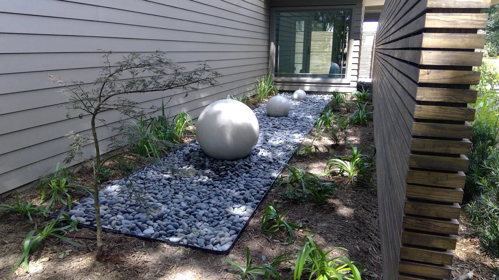

Outdoor Living in Mount Pleasant, SC

What Shapes a Mount Pleasant Project
Mount Pleasant has two things that shape outdoor projects more than style does: neighborhoods with architectural review, and lots where water is the first problem to solve. Here is how we work with both.

The Pavilion That Set the Standard
The pool pavilion we built in Mount Pleasant is the project people ask about most. Oversized engineered beams let us space the rafters 24 inches apart for a grand, timber-framed feel. It has an outdoor kitchen, a shiplap TV wall and a full bathroom, set on a travertine pool deck.
The homeowners told us it felt like something from a high-end resort. What made that possible was designing the deck, structure, kitchen and bathroom together rather than adding them to each other.
HOA Review Is the Timeline, Not the Obstacle
Many Mount Pleasant neighborhoods — I’On, Carolina Park and Dunes West among them — review size, placement and materials before anything is built. It is not usually a problem; it is a schedule.
We prepare and submit the application for you, and design to the guidelines from the start so nothing has to be redrawn. Building permits run four to six weeks on top of that, and we handle those too. Projects generally start one to two months after signing.
Lots near marsh or tidal creeks can carry wetland-related permitting, and pool pavilions need checking for setbacks, easements and flood-zone limits before a design gets fixed.

Water First, Then the Yard
Plenty of Mount Pleasant lots sit low. If the ground slopes toward the house or holds water after a storm, that gets solved before anything is built on top of it — either by reshaping the grade or with a drainage system: French drains, catch basins, piping off the gutters, channel drains.
One detail homeowners rarely think about: where a pool deck meets the house, a channel drain along that junction is often necessary. All that hard surface sheds water straight toward the foundation.
What We Build in Mount Pleasant
Pavilions and pergolas, outdoor kitchens, fireplaces and fire pits, travertine and paver pool decks, patios and walkways, retaining walls, planting, irrigation, lighting and water features — including the fire and water feature we built for a Mount Pleasant wellness center, which took masonry, plumbing and a gas hookup from our own crews.
See our Mount Pleasant page for the full service list, or what these projects cost.
Frequently Asked Questions
Do I need HOA approval for a pavilion in Mount Pleasant?
In many neighborhoods yes, including I'On, Carolina Park and Dunes West, which review size, placement and materials. We prepare and submit the application and design to the guidelines from the start.
How long does approval take?
Building permits run four to six weeks, and HOA review runs alongside that. Projects usually start one to two months after signing.
What should I check before designing a pool pavilion on a marsh lot?
Setbacks, easements and flood-zone limits, and whether wetland-related permitting applies. Those need checking before a design is fixed rather than after.
Why do you put a channel drain where the pool deck meets the house?
Because a pool deck is a large hard surface that sheds every drop that lands on it, usually right against the back of the house. Without a channel drain along that junction the water heads for the foundation.
Planning a Project of Your Own?
See everything we design and build, or get in touch to talk through your ideas with Doug and Zach.